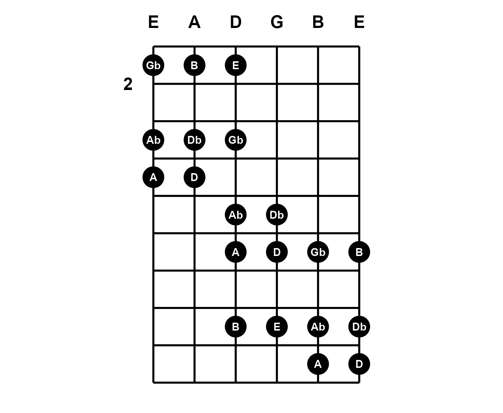
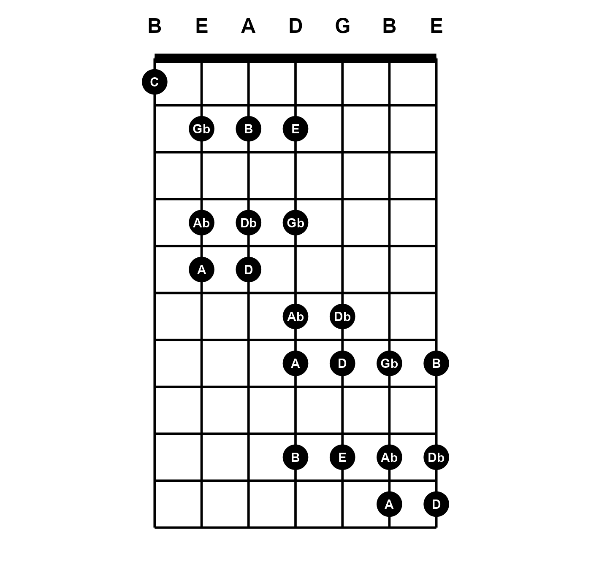

Overview
While music visualization in tabr focuses on leveraging LilyPond to make tablature, some diagrams can also be drawn directly in R using ggplot without any need to involve LilyPond. The fretboard_plot function makes standalone fretboard diagrams in R, independent of the LilyPond sheet music pipeline.
fretboard_plot is a highly specialized function that takes vector inputs for string numbers and fret numbers and maps the combination element-wise to produce a fretboard diagram. Note that fretboard_plot is a developmental function and the interface and arguments it provides may change.
The fretted notes are marked in the diagram using customary large circles.

Labels and tuning
The fretted notes can be labeled. labels can be an arbitrary vector corresponding to the string and fret numbers. For example, you can label each circle with the fingerings used to play chords or scales.

If you set labels = "notes", this is a special setting that will label all points with their note names. This can be done automatically because providing string and fret numbers in conjunction with the tuning argument gives full information about the notes along the guitar neck. fretboard_plot transposes these internally. This means it will work automatically no matter what arbitrary tuning you set. Here is an example that also displays the tuning.
string <- c(6, 6, 6, 5, 5, 5, 4, 4, 4, 4, 4, 3, 3, 3, 2, 2, 2, 1, 1, 1)
fret <- c(2, 4, 5, 2, 4, 5, 2, 4, 6, 7, 9, 6, 7, 9, 7, 9, 10, 7, 9, 10)
fretboard_plot(string, fret, "notes", show_tuning = TRUE)
How accidentals are displayed when labels = "notes", as sharps or flats, can be controlled by setting the key to a specific key or simply to sharp or flat. Here, the key of G contains a sharp, which alters the labeling from the previous diagram.

Limits
X and Y limits are expressed in terms of the number of instrument strings and the span of frets. You can override the fret range that is derived from fret:

The number of strings an instrument has is derived from tuning and this generalizes the fretboard diagram possibilities further. The tuning now specifies a seven-string guitar. One note has been added on string seven:
tuning <- "b1 e2 a2 d3 g3 b3 e4"
fretboard_plot(c(7, string), c(1, fret), "notes", fret_range = c(0, 10),
tuning = tuning, show_tuning = TRUE)
Color and faceting
The points (circles) can have border and fill color. The labels can also be colored separately. These arguments can be vectorized. Notice the open Am chord does not really have an open sixth string; it is muted. The zero is still given in order to specify where to notate, but the mute argument is given with a logical vector that indicates this entry is muted.
am_frets <- c(c(0, 0, 2, 2, 1, 0), c(5, 7, 7, 5, 5, 5))
am_strings <- c(6:1, 6:1)
mute <- c(TRUE, rep(FALSE, 11))
# colors
idx <- c(2, 2, 1, 1, 1, 2, rep(1, 6))
lab_col <- c("white", "black")[idx]
pt_fill <- c("firebrick1", "white")[idx]
fretboard_plot(am_strings, am_frets, "notes", mute,
label_color = lab_col, point_fill = pt_fill)
group can also be used for faceting. However, faceting is still a problematic feature. It may work well enough in cases where the different diagrams span similar frets. The presence of muted notes can also cause issues when faceting. fretboard_plot works best for single-panel plots. Since the function returns a ggplot object, you can always make them separate plots and arrange in a grid layout rather than rely on within-plot faceting.
Note that fretboard_plot accepts character inputs like those used throughout tabr:
f <- "0 2 2 1 0 0 0 2 2 0 0 0"
s <- c(6:1, 6:1)
grp <- rep(c("Open E", "Open Em"), each = 6)
# colors
idx <- c(2, 1, 1, 1, 2, 2, 2, 1, 1, 2, 2, 2)
lab_col <- c("white", "black")[idx]
pt_fill <- c("firebrick1", "white")[idx]
fretboard_plot(s, f, "notes", group = grp, fret_range = c(0, 4),
label_color = lab_col, point_fill = pt_fill)
Orientation
The direction and handedness can also be changed. Diagrams can be vertical or horizontal as well as left- or right-handed.
Here, titles are added to the ggplot objects with ggtitle. Of course you can add onto ggplot objects returned by fretboard_plot, but you are limited in what you can add on and must be careful to avoid overriding properties of layers fretboard_plot has already specified.
library(ggplot2)
fretboard_plot(string, fret, "notes", label_color = "white", point_fill = "dodgerblue",
fret_range = c(0, 10), show_tuning = TRUE, horizontal = TRUE) +
ggtitle("Horizontal")
fretboard_plot(string, fret, "notes", label_color = "white", point_fill = "dodgerblue",
fret_range = c(0, 10), show_tuning = TRUE, horizontal = TRUE, left_handed = TRUE) +
ggtitle("Horizontal and left-handed")